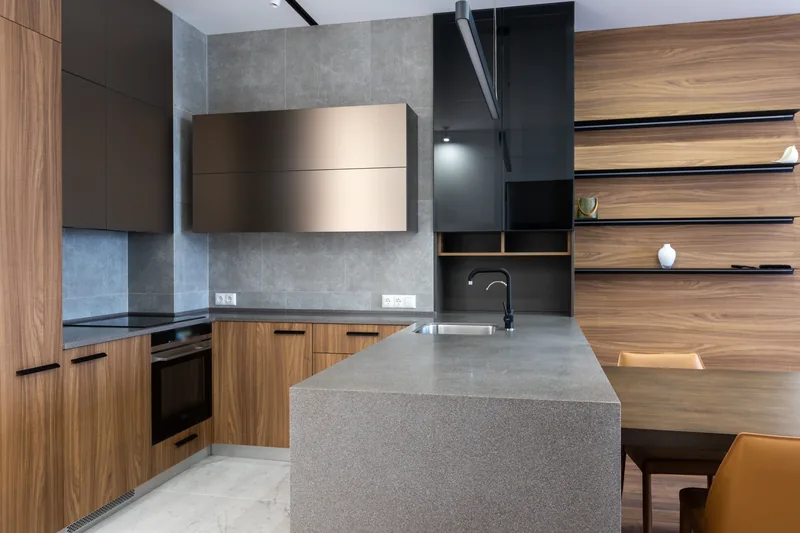

Ateliér Olovnica
Architektúra a interiér, Košice
Od prvej čiary po hotový priestor.
V ateliéri Po až Št 9:00 až 17:00

Pôdorys po prestavbe a pohľad A do kuchyne
Vybrané práce
Päť projektov z posledných troch rokov. Ku každému patrí pôdorys, ukáže sa pod kurzorom alebo tlačidlom Pôdorys.
-

14 500 × 9 600
Dom v Myslave
P-06 · Košice-Myslava · 148 m² · 2024
Biela tehla, poschodie vysunuté nad vstup a okná tam, kde podvečer svieti slnko.
-
6 200 × 5 400
Kuchyňa v rodinnom dome
P-05 · Košice-Šaca · 34 m² · 2024
Dubové skrinky od podlahy po strop, tmavý rám a ostrovček, pri ktorom sa varí aj raňajkuje.
-
výška 2 970
Schodisko z dubu
P-04 · Košice-Barca · 17 stupňov · 2023
Dubové stupne zakotvené do steny. Oceľ, ktorá ich drží, je schovaná v murive.
-
9 000 × 6 000
Výstavná miestnosť
P-03 · Košice, Staré Mesto · 54 m² · 2023
Pohľadový betón, jedno vysoké okno a svetlo, ktoré sa po stene posúva celý deň.
-
12 000 × 7 200
Byt na Juhu
P-07 · Košice-Juh · 71 m² · 2025
Štvorizbový byt v paneláku. Zrušili sme priečku do kuchyne a obývačka dostala svetlo z dvoch strán.
-
Ďalší pôdorys môže byť váš.


Ako pracujeme
Štyri fázy a jeden človek, ktorý vás nimi prevedie. Pri každej viete, čo dostanete a ako dlho to trvá.

-
7 dní
Zameranie
Prídeme na miesto, zmeriame byt alebo pozemok a vypočujeme si, ako bývate. Odfotíme každý kút, aby sme nemuseli chodiť znova.
Dostanete: zameraný pôdorys v mierke 1 : 50
-
21 až 28 dní
Štúdia
Dve až tri varianty dispozície, materiály, svietidlá a vizualizácie. Dve kolá úprav sú v cene.
Dostanete: štúdiu v PDF a vzorky materiálov
-
30 až 60 dní
Projekt
Výkresy pre remeselníkov a úrady: rozmery, rezy, detaily a zoznam materiálov. Pri dome aj projekt na povolenie stavby.
Dostanete: výkresy, výkaz výmer a rozpočet
-
podľa stavby
Realizácia
Chodíme na stavbu, kontrolujeme detaily a odpovedáme remeselníkom, aby ste nemuseli vy.
Dostanete: autorský dozor a kontrolu prác
Služby a orientačné ceny
Návrh počítame z podlahovej plochy. Presnú sumu napíšeme do ponuky po prvej konzultácii a zameraní.
-
Konzultácia na mieste
90 minút u vás v Košiciach a okolí do 20 km. Ak si potom objednáte štúdiu, cenu konzultácie odpočítame.
60 €
-
Návrh interiéru, štúdia
Dispozícia, materiály, svietidlá a tri vizualizácie. Dve kolá úprav sú v cene.
30 €/m²byt 70 m² za 2 100 €
-
Návrh interiéru s výkresmi
Štúdia a výkresy pre stolára, obkladača a elektrikára, zoznam materiálov s cenami.
45 €/m²byt 70 m² za 3 150 €
-
Architektonická štúdia domu
Dispozícia, pohľady, rezy a osadenie na pozemku, dve vizualizácie exteriéru. Podklad pre projekt stavby.
od 20 €/m²dom 150 m² od 3 000 €
-
Autorský dozor
Návšteva stavby, kontrola detailov a odpovede remeselníkom priamo na mieste.
40 €za hodinu na stavbe
-
Vizualizácia navyše
Fotorealistický pohľad do miestnosti alebo na dom, keď tri v štúdii nestačia.
120 €za kus
Ceny sú konečné, ateliér nie je platiteľom DPH. Platia od 1. 1. 2026. Projekt stavby na povolenie a projekty profesií naceníme po štúdii, podľa veľkosti a zložitosti domu.
Koľko by stál návrh vášho bytu?
Kalkulačka počíta byty od 20 do 300 m².
- Štúdia, 30 €/m²
- S výkresmi, 45 €/m²
Orientačne, podľa cien vyššie. Doprava mimo Košíc a okolia do 20 km sa počíta zvlášť.

Ateliér
Olovnicu vedú dvaja architekti, Tomáš a Lucia.
Tomáš navrhuje domy a chodí na stavby. Lucia kreslí interiéry a vyberá materiály. Pracujeme len dvaja, preto vás od prvej konzultácie po odovzdanie kľúčov vedie ten istý človek.
Olovnica je závažie na šnúre, ktoré ukáže presnú zvislicu. Murári ju používajú stáročia a my ju máme v názve, lebo dobrý priestor začína presnou čiarou.
- Od roku
- 2016
- Navrhujeme
- byty, rodinné domy, interiéry a menšie prevádzky
- Kde
- Košice a okolie do 50 km, štúdie aj inde na Slovensku
- Jazyky
- slovenčina, angličtina, maďarčina
Konzultácia
Začnime 90 minútami u vás. Prinesieme meter a skicár, vy otázky a fotky, ktoré sa vám páčia.
| Pondelokdnes | 9:00 až 17:00 |
|---|---|
| Utorokdnes | 9:00 až 17:00 |
| Stredadnes | 9:00 až 17:00 |
| Štvrtokdnes | 9:00 až 17:00 |
| Piatokdnes | 9:00 až 14:00 |
| Sobotadnes | po dohode |
| Nedeľadnes | zatvorené |
Konzultácie u vás robíme aj podvečer a v sobotu doobeda, stačí napísať.
prízemie, vchod z dvora
Mapa je ilustračná, nie v mierke, ulica je vymyslená. V ukážke Navigovať otvorí mapy len s mestom Košice.